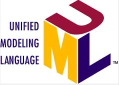
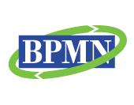

Some skills that I provide
This page contains an overview of some of my important business analysis skills.
It is essential for the business analyst to understand the SLDC that is being used by the project. The SDLC impacts what is delivered and it guides when deliveries are made. - A waterfall like SDLC allows the business analyst time to prepare the majority of their deliverables in advance.
- An agile like SDLC will not allow the business analyst time to prepare all their deliverables in advance, instead they should be prepared to deliver items in a piece-meal fashion of about 2 sprints ahead of the development.
- A RUP like SDLC allows the business analyst time to prioritize all of their deliverables such that they know ahead of time which items are going to be delivered in sequence without knowing exactly when each item will be delivered.
|
|
|
A modeling notation is used by the business analyst to perform analysis of business needs. It can also be used to communicate their findings to other people. Some of the more popular modeling notations are:
- BPMN - Business Process Modeling Notation describes a business workflow in terms of activities performed, decisions made, objects used and swimlanes that represent the roles performing the work.
- UML - Unified Modeling Language contains a rich set of diagram types of which, use cases and activity are the most popular with business analysts.
- DFD - Data Flow Diagrams lost their appeal with the rise of the much more diverse and flexible UML language, but some organizations still use diagrams that show data flows, data store, event flows and their relationships between them.
- English - Because of its ambiguity, English (or similar spoken languages), is not recommended as the sole means to communicate business analysis findings. However it is should be used in conjunction with a well defined modeling language, to outline the information contained in an analysis model.
|
|
|
Tools can mean 2 things to the business analyst:- the modeling applications used to create their work, or
- the visual representation by which their work is delivered.
This paragraph talks about 1) the modeling tools that I use to do my work. (More information about visual representations can be found in my book and within this web site.)
Modeling tools are an essential means for communicating business analysis findings to the interested parties. Voice alone, (which I do not consider to be a tool), will cause confusion and ambiguities, which will lead to unstable and chaotic project deliverables. Some popular tools that I have used to perform business analysis work are:
- Whiteboard - This is an essential tool for communicating business analysis findings in real-time. I.e. in a meeting, when delivering a presentation or eliciting requirements from a stakeholder. Whiteboards should be considered a temporary repository for information in that they are difficult to change, perform no checking that the information is correct and the information on them wil become corrupted very quickly.
- Rally - Used to capture user stories as text. This can be can be used to support modeling by attaching an appropriate diagram from a system model to the user story.
- Jira - Similar tool to Rally, but with more flexibility in configuring the way that information is related and captured.
- Visual Paradigm - VP is my favourite tool for capturing business analysis information. It was* cheap, enables capture and maintenance of information very efficiently and is quit stable. However the diagramming user interface can be frustrating at times.
- Enterprise Architect - A direct competitor to VP, it is now much cheaper*, includes more functionality and has a better diagramming user interface. However its downfall is that the tool imposes unnecessary restrictions on the user in the way that information is captured which makes it less efficient than VP.
- Visio - Up to version 2010, Visio Professional includes UML modeling capabilities. In subsequent releases this functionality was removed.
- Rational Analyst Suite - An older toolset comprising modeling (Rational Software Architect) and requirements management tools (RequisitePro) amongst others. Not used so much now with cheaper tools available to analysts.
|
|
|
This section contains a list of the diagram types that I use to assist with business analysis activities and what their major benefits are. This list is not exhaustive and I will use whatever diagram appears to be most appropriate for the situation that I'm trying to capture.
- Use Case - Captures an overview of the major features that compose the problem space. I use 2 types of use case:
- Business Use Case - to capture a problem that the business area is trying to solve and the benefits that the solution will bring to the customer of the use case.
- System Use Case - to capture a feature that the proposed solution will deliver to the user of the system.
- Activity Diagram - Primarily used to capture the details of a use case. Activity diagrams may also be used to model a process such as a class method.
- Sequence Diagram - Shows the flow of information between several communicating systems. Sequence diagrams are great for showing how several system interfaces work together to realize a sequence of activities in a use case.
- Class Diagram - Can be used to capture the data and operations used by a system or the just data that is needed by the business in order to perform a business function.
- State Transition Diagram - STDs are great for showing how the unctions in a system impact the static classes over time. They allow functionality (or operations), to be assigned to classes and if a full analysis is performed, wil allow a logical model (comprising class and state transition diagrams), to be executable.
- Context Diagram - captures the scope of the problem under consideration.
- BPMN Workflow Diagram - captures a combination of business activity and business data in a single diagram, in terms of the actors that perform those activities.
- Deployment Diagram - shows the architecture into which a solution will be deployed. This may be a system architecture, if capturing a system solution, or a business architecture if capturing a business model.
|
|
Industries where I have practiced business analysis using these skills include:
- Aerospace - Building models for the International Space Station operations and for aircraft fuel control systems.
- Entertainment - Modeling mobile apps and web sites and writing user stories for new features.
- Telecommunications - Modeling communication between systems and devices and writing user stories for new features.
- Health Insurance - Modeling business processes for processing health claims and writing user stories for health plan enrollment and maintenance.
- Operations - Modeling current and to-be processes for the operation of various businesses including customer support, and Washington state ferries.
- IT - Modeling and improving the SDLC used in software development environments; waterfall, RUP, agile and combinations of each.
- Retail - Modeling the business processes for delivering a product to a store from inception through to retirement of the product.
|
|
|  Unified Modeling Language The UML standard is owned by OMG. |
 Business Process Modeling Notation The BPMN standard is owned by OMG. |
BA's Body Of Knowledge The BABOK is published by the IIBA. |
|